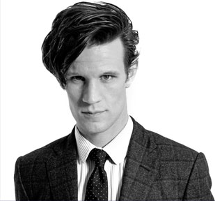

Matt Smith - Décimo Primeiro Doutor
Uma perda para o futebol e uma vitória para o palco e a tela. Matt Smith originalmente tinha planos de se tornar um jogador de futeboL profissional, mas uma lesão na coluna tirou-lha do jogo.
Com o apoio de um professor, Matt começou a atuar e entrou para o National Youth Theatre. No tempo que passou lá, ele chamou a atenção do Royal Court Theatre quando estrelou a peça Fresh Kills, dirigida por Wilson Milam
Sua performance garantiu-lhe papéis no National Theatre em sucessos como History Boys, On the Shore of the Wide World e também na aclamada trilogia de peças Burn / Citizenship / Chatroom.
As primeiras aparições de Matt na telinha foram ao lado de Billie Piper nas histórias de detetive de Phillip Pullman, The Ruby in the Smoke e The Shadow in the North (ambos da BBC One).
Depois disso, ele ganhou o papel principal de Danny na série política da BBC Party Animals.
Num retorno ao Royal Court em 2007, Matt interpretou Henry na peça That Face, de Polly Stenham, contracenando com Lindsay Duncan. Sua performance rendeu uma indicação a melhor revelação no Evening Standard e, um ano depois, a peça teve uma 2ª temporada no West End, no Duke of York’s Theatre.
Entre as duas temporadas, Matt interpretou Guy, contracenando com Buddy (Christian Slater) em Swimming with Sharks, adaptação de Mike Leslie do filme de 1994.
Neste período, ele também interpretou um dos papéis principais na série The Street, vencedora do BAFTA, contracenando com Gina McKee e Lorraine Ashbourne.
Matt também estrelou em Moses Jones, em que fez o papel de Dan Twentyman, ao lado de Shaun Parkes, e também protagonizou Christopher and his Kind, drama de Kevin Elyot que conta a história do escritor Christopher Isherwood.
Matt fez uma impressionante e aclamada estreia como o Décimo Primeiro Doutor em 2010, tornando-se o ator mais jovem a fazer este papel.